Pilot · Arnulfstraße / Steubenplatz
LIVE · v1 · 8 Fahrbeziehungen8 aktive Beziehungen im Live-Katalog
Ursprünglicher Pilot. Viele Varianten einschließlich Geradeaus, Links, Rechts, abweichender Fahrwege und langer Ampelwartezeiten erfolgreich in der Praxis getestet.
Pilot · Balanstraße / Chiemgaustraße
LIVE · v1 · 8 Fahrbeziehungen8 aktive Beziehungen im Live-Katalog
Ursprünglicher Pilot. Geometrie und Fahrbeziehungen bestätigt; im Backend aktiviert.
K01 v1 · Ständlerstraße / Balanstraße
LIVE · v1 · 8 Fahrbeziehungen8 aktive Beziehungen im Live-KatalogIm Branch für Backend 2.4.15 aktiviert: 8
Thomas: K01 sieht perfekt aus. Geometrie bestätigt; aktive Fahrbeziehungen siehe Freigabebericht.

PNG öffnen
K02 v1 · Fürstenrieder Straße / Agnes-Bernauer-Straße
LIVE · v1 · 8 Fahrbeziehungen8 aktive Beziehungen im Live-KatalogIm Branch für Backend 2.4.15 aktiviert: 8
Thomas: K02 sieht perfekt aus. Geometrie bestätigt; aktive Fahrbeziehungen siehe Freigabebericht.

PNG öffnen
K03 v1 · Fürstenrieder Straße / Gotthardstraße
LIVE · v1 · 8 Fahrbeziehungen8 aktive Beziehungen im Live-KatalogIm Branch für Backend 2.4.15 aktiviert: 8
Thomas: K03 sieht perfekt aus. Geometrie bestätigt; aktive Fahrbeziehungen siehe Freigabebericht.
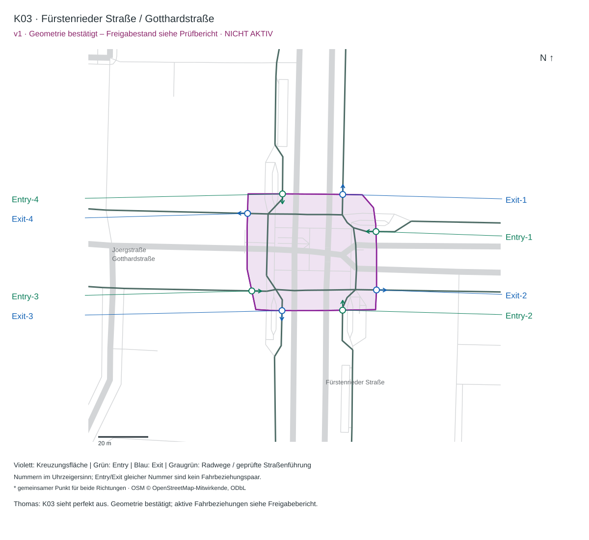
PNG öffnen
K04 v1 · Landsberger Straße / Elsenheimerstraße / Friedenheimer Brücke
LIVE · v1 · 8 Fahrbeziehungen8 aktive Beziehungen im Live-KatalogIm Branch für Backend 2.4.15 aktiviert: 8
Thomas: K04 sieht perfekt aus. Geometrie bestätigt; aktive Fahrbeziehungen siehe Freigabebericht.
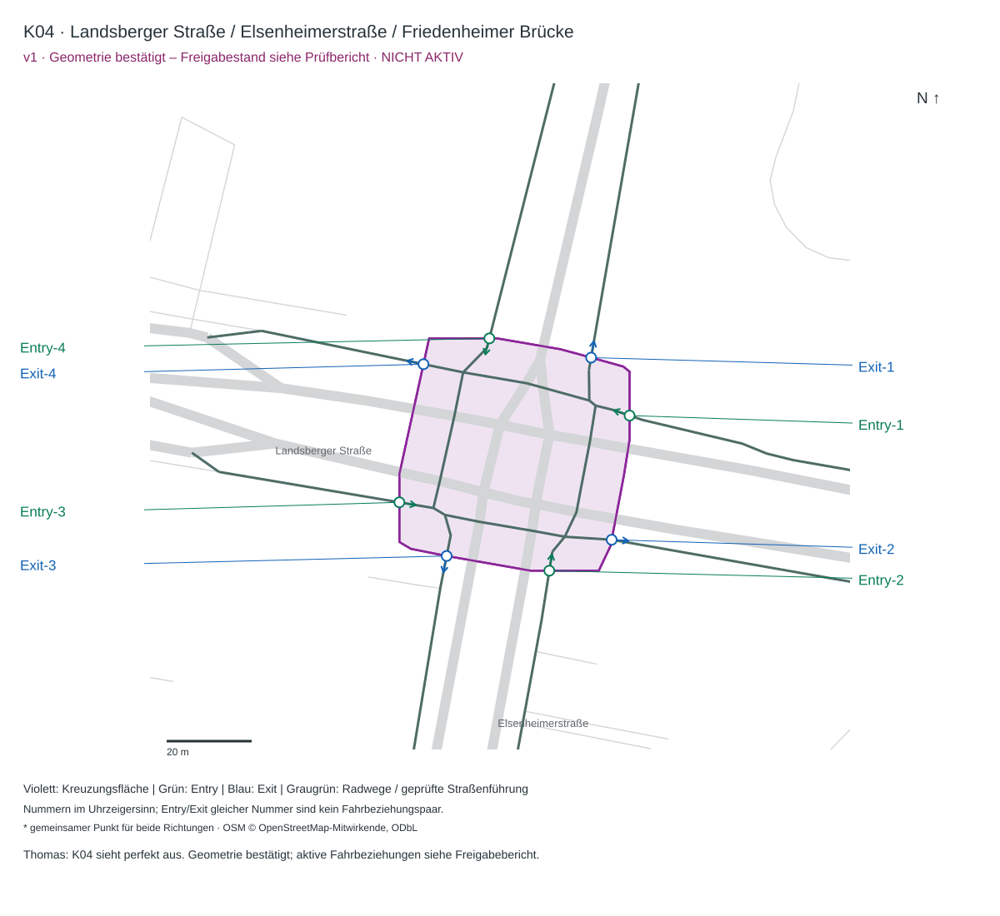
PNG öffnen
K05 v3 · Westendstraße / Zschokkestraße / Tübinger Straße
LIVE · v3 · 6 Fahrbeziehungen6 aktive Beziehungen im Live-KatalogIm Branch für Backend 2.4.15 aktiviert: 6
K05 v3 von Thomas freigegeben: Exit-4 entfällt, Entry-4 liegt näher zur Kreuzung. Neue Fläche und sechs verbliebene Fahrbeziehungen technisch geprüft; Backend 2.4.5 für Deployment vorbereitet.
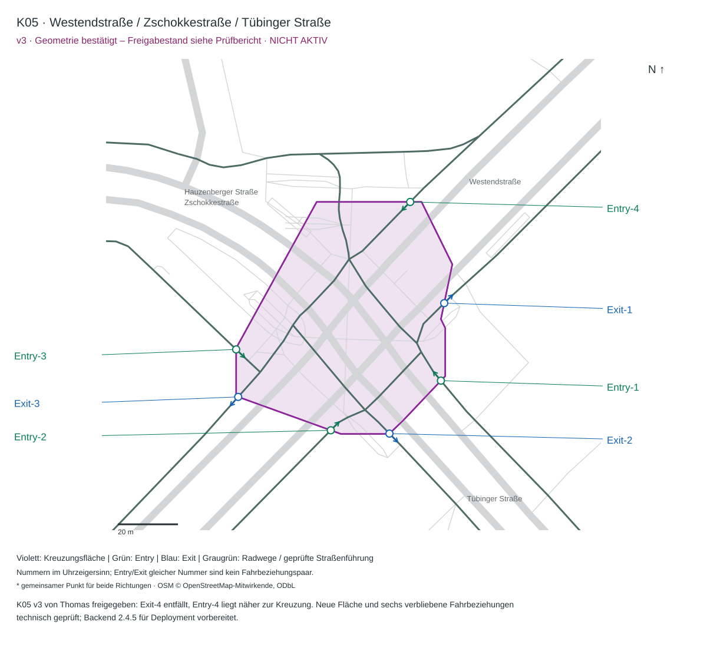
PNG öffnen
K06 v2 · Nymphenburger Straße / Waisenhausstraße / Lachnerstraße
LIVE · v2 · 4 Fahrbeziehungen4 aktive Beziehungen im Live-KatalogIm Branch für Backend 2.4.15 aktiviert: 4
v2: Lachnerstrasse mit gemeinsamem Entry-2 und Exit-3 auf der Fahrbahn vor der Ampel ergaenzt. Polygon unveraendert, Rufinistrasse ausgeschlossen. Nach Einfuegen des Punktepaares folgende Nummern im Uhrzeigersinn angepasst.
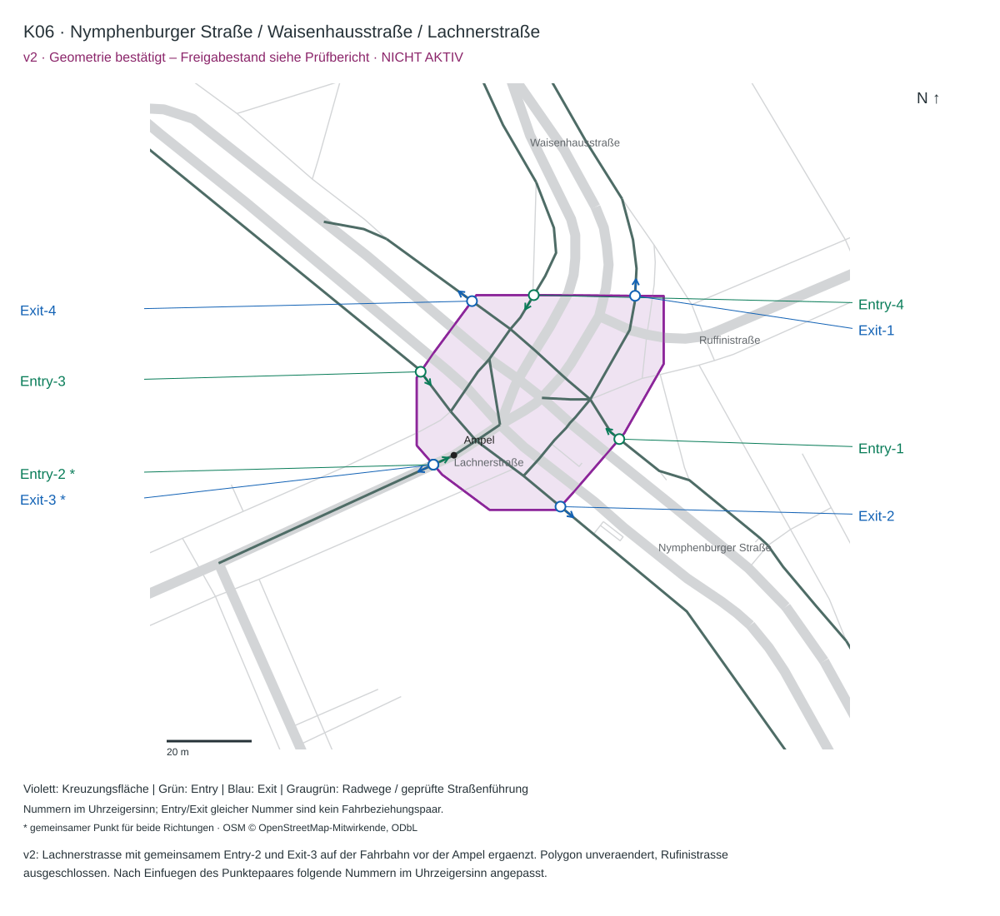
PNG öffnen
K07 v2 · Marsstraße / Pappenheimstraße
LIVE · v2 · 8 Fahrbeziehungen8/8 Links-/Geradeausbeziehungen technisch bestandenIm Branch für Backend 2.4.15 aktiviert: 8
v2 von Thomas freigegeben. Technisch 8/8 Links-/Geradeausbeziehungen und 4/4 Rechtskontrollen bestanden, einschließlich der Radfahrstreifen. Noch nicht in Runtime aktiviert oder deployed.
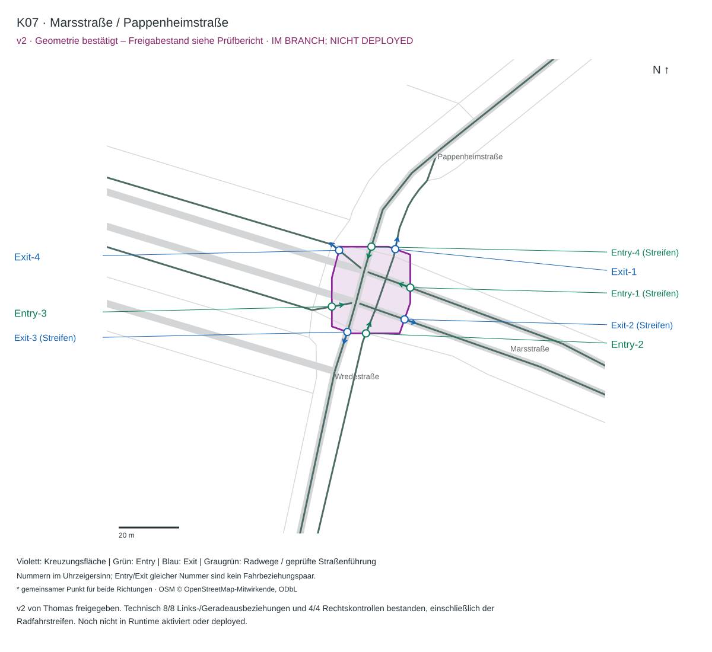
PNG öffnen
K08 v2 · Arnulfstraße / Hackerbrücke / Wredestraße
LIVE · v2 · 8 Fahrbeziehungen8 aktive Beziehungen im Live-KatalogIm Branch für Backend 2.4.15 aktiviert: 8
v2: Hackerbrücke auf der Fahrbahn; Entry-2 und Exit-3 gemeinsam an der Ampel. Bisherige Gehwegpunkte entfernt. Wegen geänderter Punktstruktur neu nummeriert; Geometrie von Thomas bestaetigt.
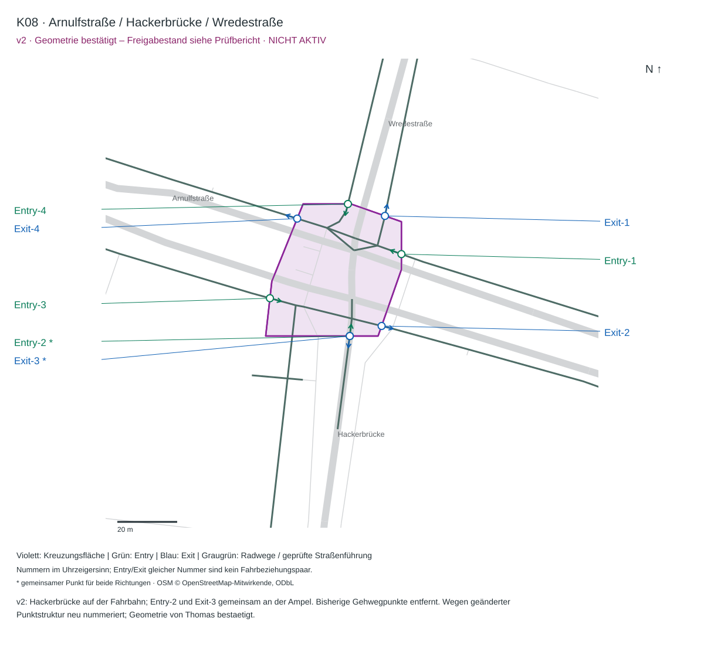
PNG öffnen
K10 v4 · Thomasiusplatz / Balanstraße / Werinherstraße
LIVE · v4 · 13 Fahrbeziehungen8/8 Links-/Geradeausbeziehungen technisch bestanden; 5 Sonderfolgen implementiert/geprüft für neue App (v2)Im Branch für Backend 2.4.15 aktiviert: 13Davon 5 Sonderfolgen nur mit neuer App (Protokoll v2).
v4 freigegeben. Im Branch für Backend 2.4.8: 8 reguläre Beziehungen und 5 Wilram-Sonderfolgen implementiert/geprüft. Sonderansagen benötigen neue App mit Protokoll v2. Interne ortsgebundene Hinweise, richtungsbestätigtes rechts/geradeaus und Wenden unterstützt. Noch nicht deployed; Praxistest offen. Wilram nach Exit-2 bleibt Standardrouting außerhalb.

PNG öffnen
K11 v3 · Wintrichring / Allacher Straße / Nederlinger Straße
LIVE · v3 · 10 Fahrbeziehungen10/10 Links-/Geradeausbeziehungen technisch bestandenPraxistest erfolgreich · 2026-11-08 · viele Fahrbeziehungen (Thomas)Im Branch für Backend 2.4.15 aktiviert: 10
Geometrie und technisch bestandene Beziehungen für Backend 2.4.6 freigegeben. Tatsächlicher Live-Stand siehe Prüfungsübersicht.
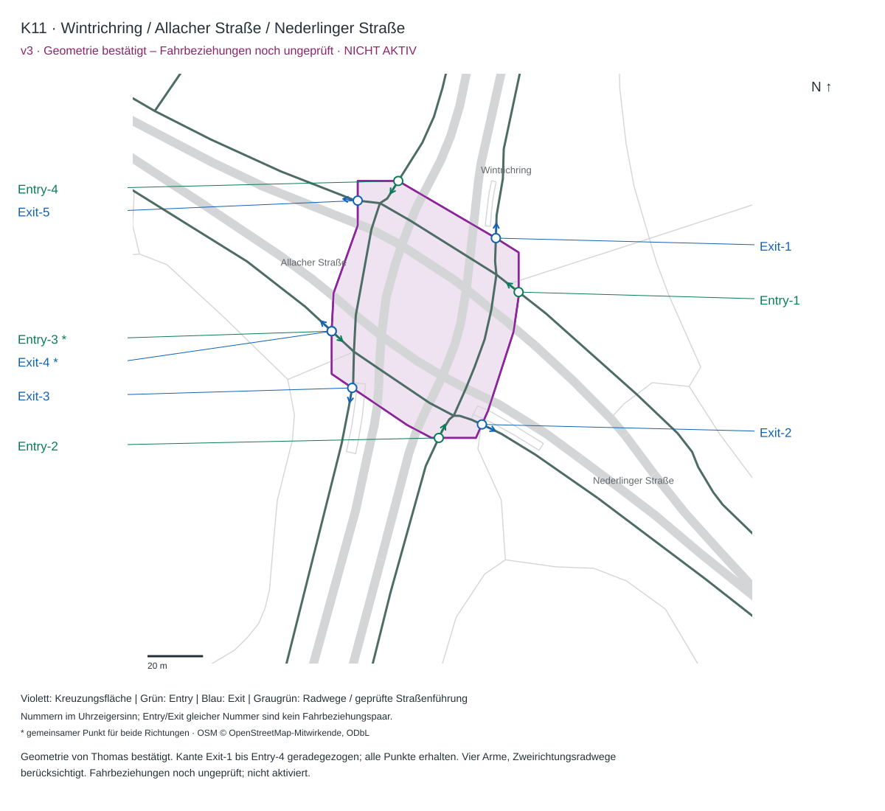
PNG öffnen
K12 v2 · Menzinger Straße / Wintrichring / Maria-Ward-Straße
LIVE · v2 · 8 Fahrbeziehungen8/8 Links-/Geradeausbeziehungen technisch bestandenPraxistest erfolgreich · 2026-11-08 · viele Fahrbeziehungen (Thomas)Im Branch für Backend 2.4.15 aktiviert: 8
Geometrie und technisch bestandene Beziehungen für Backend 2.4.6 freigegeben. Tatsächlicher Live-Stand siehe Prüfungsübersicht.
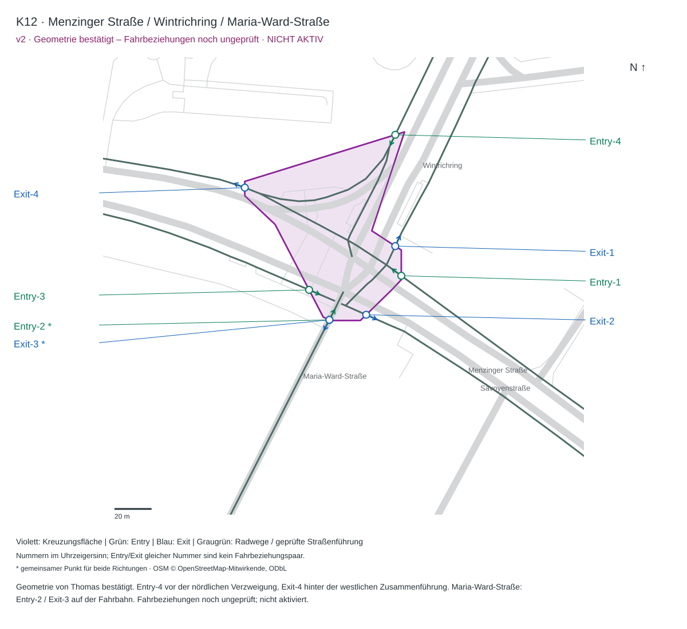
PNG öffnen
K13 v2 · Arnulfstraße / Landshuter Allee
LIVE · v2 · 16 Fahrbeziehungen16/18 Links-/Geradeausbeziehungen technisch bestandenPraxistest erfolgreich · 2026-11-08 · viele Fahrbeziehungen (Thomas)Im Branch für Backend 2.4.15 aktiviert: 16
Ohne Kreuzungsansage: Entry-2 → Exit-5 / Entry-3 → Exit-5. Standardhinweise bleiben.
Geometrie und technisch bestandene Beziehungen für Backend 2.4.6 freigegeben. Tatsächlicher Live-Stand siehe Prüfungsübersicht. GESPERRT: Entry-2 nach Exit-5 und Entry-3 nach Exit-5 (links); hier bleiben Standardhinweise.
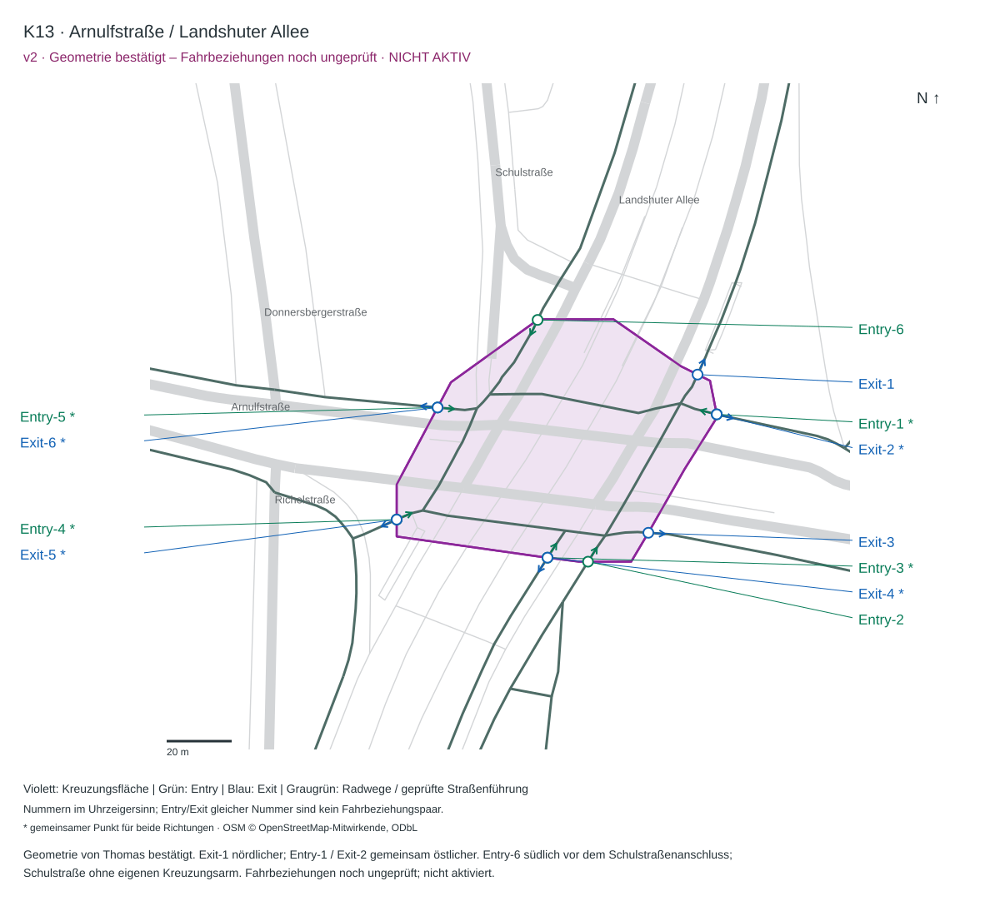
PNG öffnen
K14 v2 · Nymphenburger Straße / Landshuter Allee
LIVE · v2 · 10 Fahrbeziehungen10/10 Links-/Geradeausbeziehungen technisch bestandenPraxistest erfolgreich · 2026-11-08 · viele Fahrbeziehungen (Thomas)Im Branch für Backend 2.4.15 aktiviert: 10
Geometrie und technisch bestandene Beziehungen für Backend 2.4.6 freigegeben. Tatsächlicher Live-Stand siehe Prüfungsübersicht.
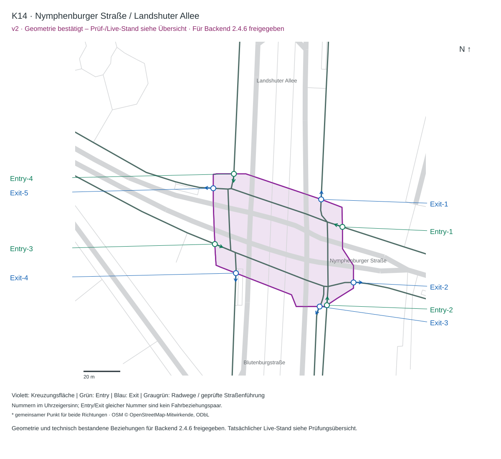
PNG öffnen
K15 v3 · Leonrodstraße / Landshuter Allee
LIVE · v3 · 8 Fahrbeziehungen8/8 Links-/Geradeausbeziehungen technisch bestandenPraxistest erfolgreich · 2026-11-08 · viele Fahrbeziehungen (Thomas)Im Branch für Backend 2.4.15 aktiviert: 8
Geometrie und technisch bestandene Beziehungen für Backend 2.4.6 freigegeben. Tatsächlicher Live-Stand siehe Prüfungsübersicht.

PNG öffnen
K16 v1 · Dachauer Straße / Leonrodstraße / Schwere-Reiter-Straße
LIVE · v1 · 10 Fahrbeziehungen10/10 Links-/Geradeausbeziehungen technisch bestandenPraxistest erfolgreich · 2026-11-08 · viele Fahrbeziehungen (Thomas)Im Branch für Backend 2.4.15 aktiviert: 10
Geometrie und technisch bestandene Beziehungen für Backend 2.4.6 freigegeben. Tatsächlicher Live-Stand siehe Prüfungsübersicht.
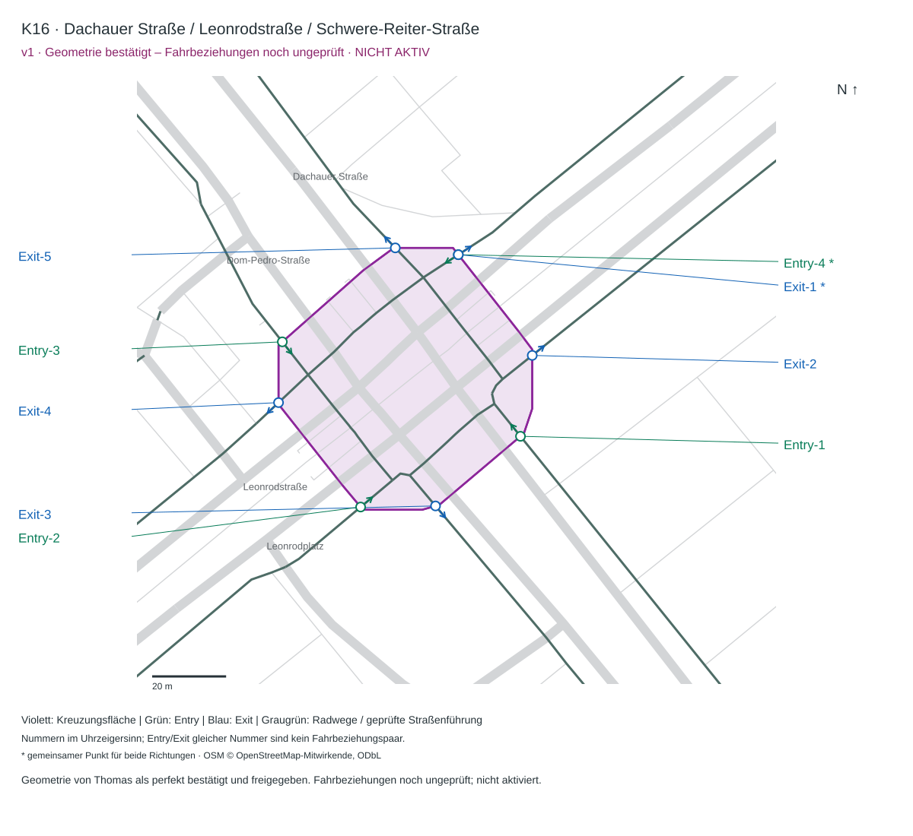
PNG öffnen
K17 v6 · Dachauer Straße / Lothstraße
LIVE · v6 · 8 Fahrbeziehungen8/8 Links-/Geradeausbeziehungen technisch bestandenPraxistest erfolgreich · 2026-11-08 · viele Fahrbeziehungen (Thomas)Im Branch für Backend 2.4.15 aktiviert: 8
Geometrie und technisch bestandene Beziehungen für Backend 2.4.6 freigegeben. Tatsächlicher Live-Stand siehe Prüfungsübersicht.

PNG öffnen
K18 v3 · Romanplatz Süd / Arnulfstraße / Wotanstraße / Guntherstraße
NICHT DEPLOYEDTechnische Prüfung ausstehend
v3 bleibt unverändert. WIEDERVORLAGE 16.11.2026: Thomas hat OSM erneut korrigiert; zusätzlichen Guntherstraßen-Entry-2 aus v2 nach neuer OSM-Prüfung wieder aufnehmen. Bis dahin keine Geometrieänderung/technische Aktivierung.

PNG öffnen
K19 v3 · Romanplatz Nord / Notburgastraße / Romanstraße
LIVE · v3 · 8 Fahrbeziehungen8/8 Links-/Geradeausbeziehungen technisch bestandenIm Branch für Backend 2.4.15 aktiviert: 8
v3 von Thomas freigegeben. Technisch alle 8 Links-/Geradeausbeziehungen und 4 Rechtskontrollen bestanden. Entry-1 nach Exit-3/Exit-4 jetzt im neuen Vorschlag belegt. Bisherige Runtime v2 mit 6 Beziehungen unverändert; v3 noch nicht aktiviert oder deployed.
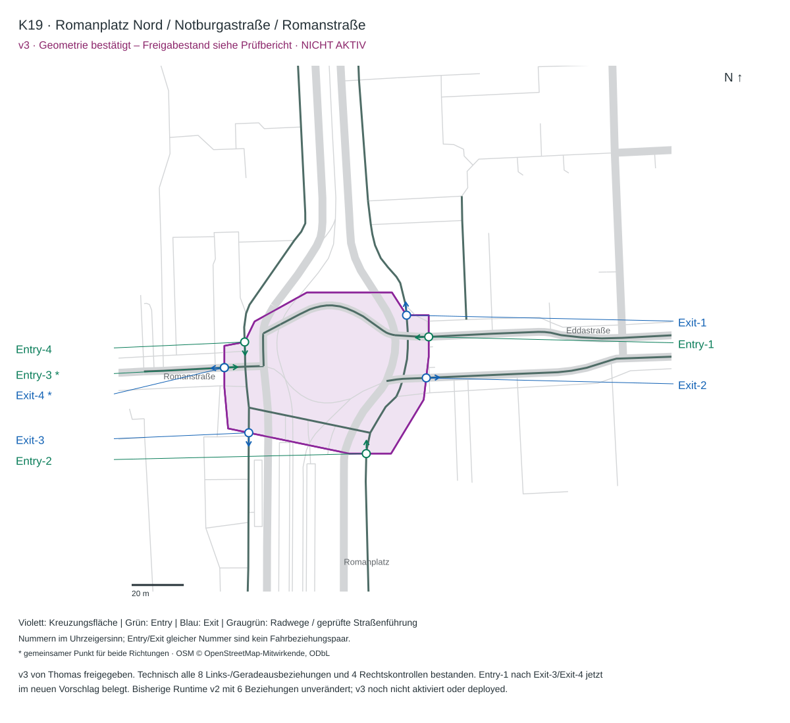
PNG öffnen
K21 v2 · Schwere-Reiter-Straße / Ackermannstraße / Infanteriestraße
LIVE · v2 · 10 Fahrbeziehungen10/12 Links-/Geradeausbeziehungen technisch bestandenIm Branch für Backend 2.4.15 aktiviert: 10
Ohne Kreuzungsansage: Entry-4 → Exit-2 / Entry-3 → Exit-2. Standardhinweise bleiben.
Geometrie v2 freigegeben. Zehn Fahrbeziehungen im Branch aktiviert. Entry-4 / Entry-3 nach Exit-2 bewusst gesperrt: Makroansage nicht eindeutig gegenüber Exit-3; normale Abbiegehinweise beibehalten. Sechs Rechtskontrollen bestanden. Noch nicht deployed.

PNG öffnen
K23 v1 · Ludwigstraße / Von-der-Tann-Straße / Oskar-von-Miller-Ring
LIVE · v1 · 8 Fahrbeziehungen8/8 Links-/Geradeausbeziehungen technisch bestandenIm Branch für Backend 2.4.15 aktiviert: 8
Vier Arme mit getrennten Radwegen. Bitte Lage der acht Punkte und Einschluss aller Querungen/Warteflächen prüfen; Galeriestraße im Süden bleibt außerhalb.

PNG öffnen
K24 v1 · Maximilianstraße / Karl-Scharnagl-Ring / Thomas-Wimmer-Ring
NICHT DEPLOYED15/15 Links-/Geradeausbeziehungen technisch bestanden; 5 Zweirichtungsradweg-Sonderansagen für neue App (v3)Im Branch für Backend 2.4.15 aktiviert: 15
Zweirichtungswege am Ring und Fahrbahn/Radfahrstreifen in der Maximilianstraße. Bitte insbesondere die gemeinsamen Punkte am westlichen Maximilian-Arm bestätigen; getrennte Ring-Richtungen bleiben sichtbar.
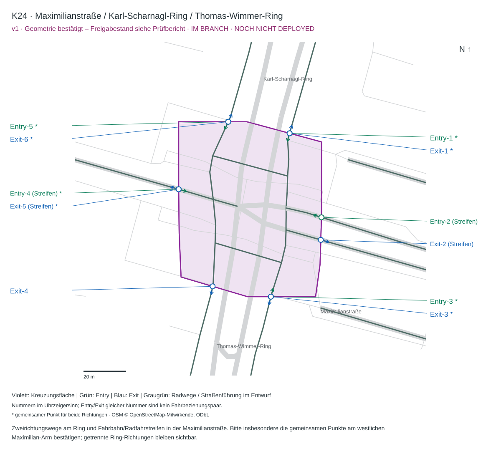
PNG öffnen
K25 v1 · Brienner Straße / Maximiliansplatz / Oskar-von-Miller-Ring
LIVE · v1 · 8 Fahrbeziehungen8/8 Links-/Geradeausbeziehungen technisch bestandenIm Branch für Backend 2.4.15 aktiviert: 8
Brienner Straße mit Radfahrstreifen auf der Fahrbahn; die beiden Ringseiten als getrennte Radwege. Bitte bestätigen, dass alle vier Arme innerhalb dieser kompakten Fläche zusammengehören.

PNG öffnen
K28 v1 · Blumenstraße / Corneliusstraße / Fritz-Neuland-Straße
LIVE · v1 · 8 Fahrbeziehungen8/8 Links-/Geradeausbeziehungen technisch bestandenIm Branch für Backend 2.4.15 aktiviert: 8
Vier Arme, teilweise auf der Fahrbahn. Bitte Flächengröße und Übergang zum südwestlichen Blumen-Radweg prüfen. Prälat-Zistl-Straße im Nordwesten bleibt außerhalb.
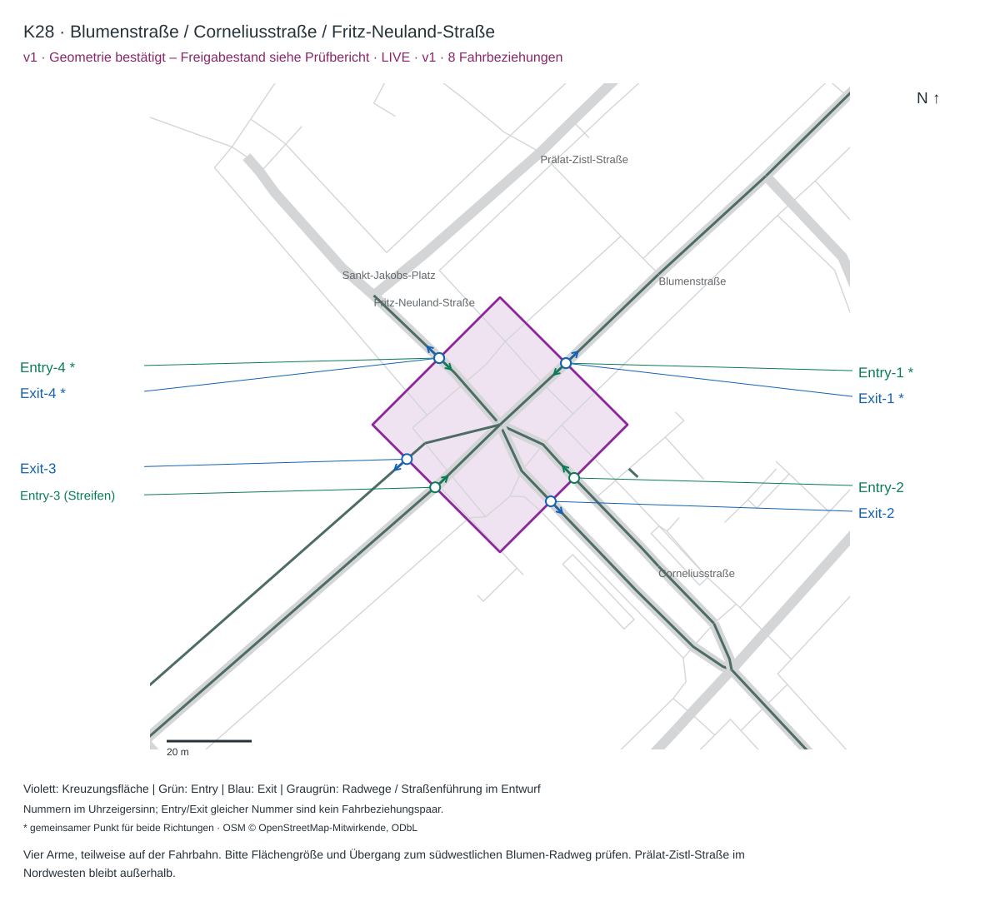
PNG öffnen
K30 v3 · Lenbachplatz / Pacellistraße
NICHT DEPLOYED3/4 Links-/Geradeausbeziehungen technisch bestandenIm Branch für Backend 2.4.15 aktiviert: 3
Ohne Kreuzungsansage: Entry-4 → Exit-3. Standardhinweise bleiben.
Geometrie v3 bestätigt; drei Fahrbeziehungen technisch bestanden und im Branch aktiviert. Entry-4 nach Exit-3 ohne Kreuzungsansage (geradeaus ohne Ampel). Ottostraße und Exit-5 bleiben ausgeschlossen. Interner Radweganschluss zur Pacellistraße durch aktuellen OSM-Beleg geprüft; Fläche und Punkte unverändert.
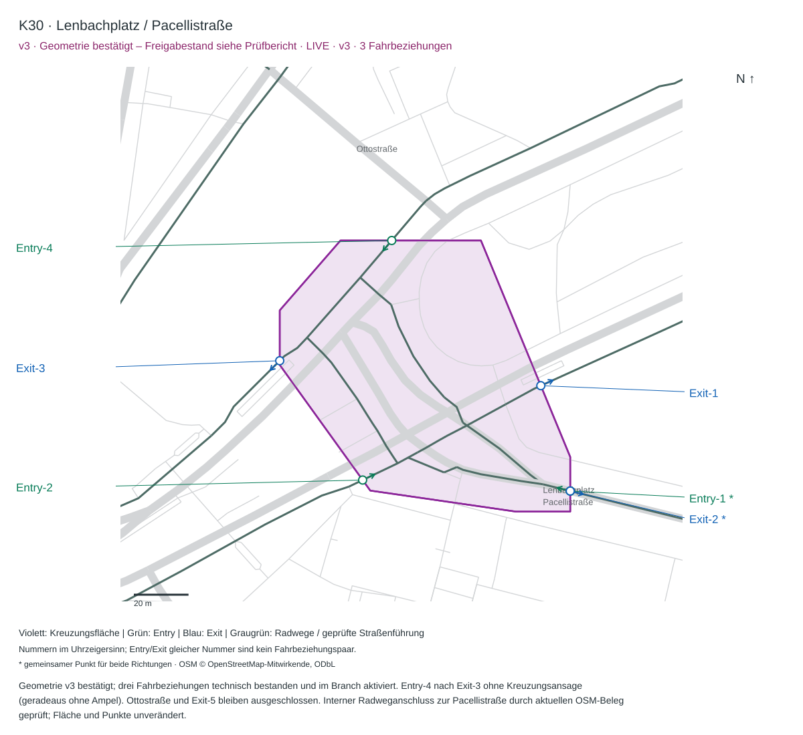
PNG öffnen
K33 v2 · Sendlinger-Tor-Platz / Sonnenstraße / Lindwurmstraße / Blumenstraße
NICHT DEPLOYED8/8 Links-/Geradeausbeziehungen technisch bestandenIm Branch für Backend 2.4.15 aktiviert: 8
Geometrie v2 von Thomas bestätigt. Acht Links-/Geradeausbeziehungen technisch bestanden und aktiviert; Rechtsabbiegungen behalten Standardhinweise. Entry-3 und Exit-3 unverändert, übrige Punkte näher an der Kreuzung. Nußbaumstraße, Pettenkoferstraße und östlicher Platzbereich bleiben außerhalb.
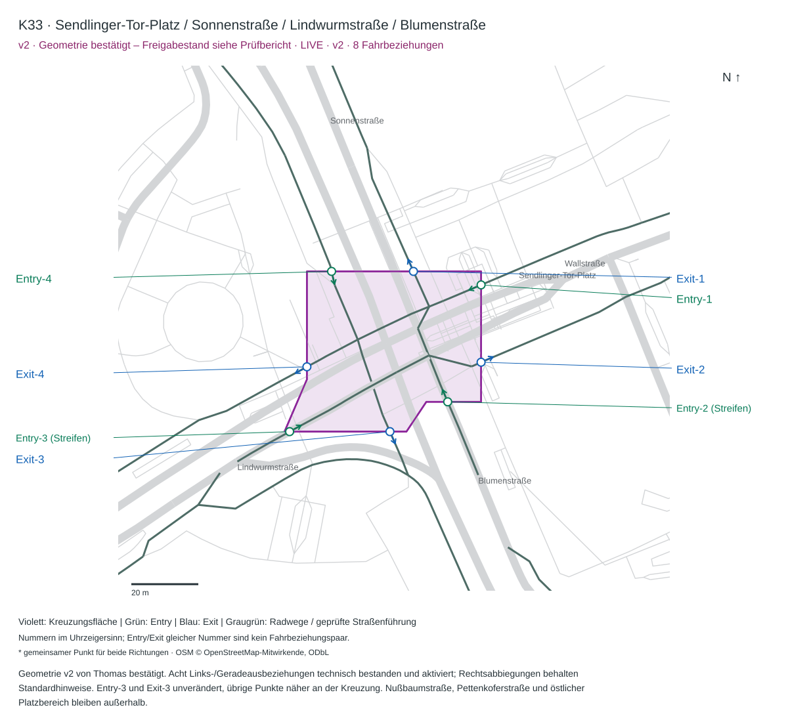
PNG öffnen